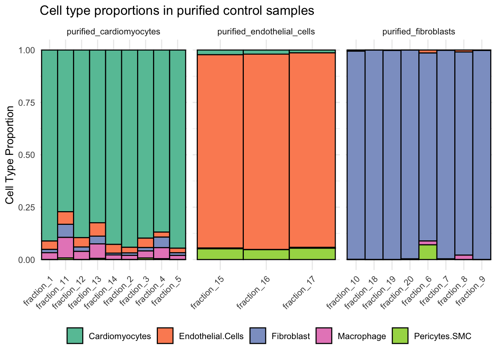
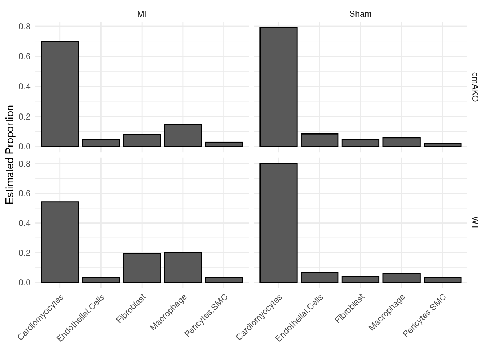
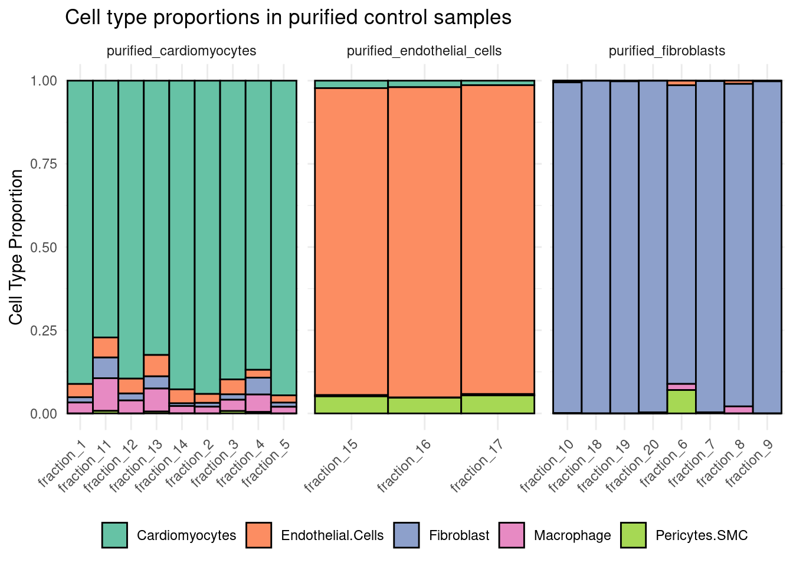

Last class, we had introduced a dataset/experiment that we would work through. Let’s remind ourselves of some of the details:
We have proportions of cell types across samples
There controls made of mostly pure cell types (fractions) and experimental samples (whole)
There are .csv files for both the cell type proportion data and the sample phenotypes
There are a few things to think about when wrangling/exploring data:
What do you want to know about this data?
What kind of visuals would you want to make?
How does the data need to be formatted to get those visuals?
What are some expected features of our data?
Take a moment to talk among yourselves about this/any ideas you had since last class!
Getting familiar with the data
Proportions Data
# Load the data. The sample IDs were stored as the first row, so lets make those the row.namescell_props <-read.csv("wrangling-files/cellProportions.csv",row.names =1)head(cell_props)
Our data fits the tidy style, since each row is a sample (observation) and each column is a different cell type (variable).
When assessing data, it’s good to consider what features you’d expect from a given data set. This helps you know if something has gone wrong before you’ve gotten your hands on it.
We’re looking at the proportion of cell types in each sample, which should sum up to 1. Checking that the values in each row add to 1 would help confirm that we have what we’re expecting:
all(rowSums(cell_props) ==1)
[1] FALSE
This looks good! There are endless factors you could check about your data. It’s a good practice to consider what they could be and check them every so often throughout an analysis.
Tip
For example, raw RNA-seq matrices should have values that go up to 100,000s. So if you only see small numbers in the data provided by a collaborator, it’s likely been manipulated in some way.
Phenotype data
We also have the phenotypes for the samples in a separate file:
'data.frame': 36 obs. of 3 variables:
$ type : chr "purified_cardiomyocytes" "purified_cardiomyocytes" "purified_cardiomyocytes" "purified_cardiomyocytes" ...
$ genotype : chr NA NA NA NA ...
$ treatment: chr NA NA NA NA ...
This tells us that cell_phenos is a data frame with 3 variable (columns) and 36 observations (rows). It has info about the type of sample, genotypes, and treatment status.
Planning the analysis
Let’s recount what we want to know and then what we already know about the data:
Phenotypes and cell proportion measures each in their own data frames
We want to know:
If the controls look as we’d expect
What group differences there are
To get at the question about controls, we’d need to check cell_phenos to see which samples are from the control or experimental groups. After, we’ll plot the proportions.
flowchart LR
A[Data frame of\n cell proportions] --> C(Merged proportions\n and phenotypes)
B[Data frame of\n sample phenotypes] --> C
C --> D{Steps to get data\nformatted for plotting}
D --> E[Plot of control samples]
D --> F[Plot of experiment samples]
Manipulating data frames
Summarizing and subsetting
Let’s get more context on what’s in the data. table is a convenient way to summarize columns and lists:
# What unique values and how many of each are in the "genotype" fieldtable(cell_phenos$genotype)
cmAKO WT
8 8
…wait, why didn’t we see any of the NAs we saw when we ran str(cell_phenos)? Turns out that table() wants you to specify that you’re interested in NAs with useNA = "ifany". Remember that ?table returns the manual for table() and works for any function!
# What unique values and how many of each are in the "type" fieldtable(cell_phenos$genotype, useNA ="ifany")
cmAKO WT <NA>
8 8 20
Of the samples, 8 are knock-outs, 8 are wild type, and 20 haven’t been labeled with either. So, like any good bioinformatician, you email your collaborator and ask what’s up with that. Apparently, the controls samples don’t have genotype/treatment information
Lets subset the data into the whole and fraction samples. Thesubset() function is great for this. is.na() to pinpoint the fraction samples, since they won’t have genotype information.
# Pull out the rows with missing genotypesfraction_phenos <- cell_phenos |>subset(is.na(genotype))head(fraction_phenos)
# Using an exclamation point inverses true/false values in R. # Think of it as saying,"is NOT NA"whole_phenos <- cell_phenos |>subset(!is.na(genotype))head(whole_phenos)
type genotype treatment
whole_1 whole_tissue WT MI
whole_2 whole_tissue WT MI
whole_3 whole_tissue WT MI
whole_4 whole_tissue WT MI
whole_5 whole_tissue WT Sham
whole_6 whole_tissue WT Sham
Combining and reordering
We’re going to combine the phenotype and composition data sets, which helps when making some more complex plots.
Data frames can be combined in a bunch of ways, but no matter the method it’s essential that the order of samples match. R has two built-in methods, binds (cbind and rbind) and merge.
Binds slap two data frames together. cbind adds the second data frame new columns, rbind adds rows. Binds don’t consider the order of the data sets, so there’s a risk of things being out of order.
merge is similar to cbind, but matches the data sets based on a common column. In our data, we would merge proportions with the phenotypes by the sample id.
Lets try each of these out:
cbind
# Check if the sample names match all(rownames(cell_phenos) ==rownames(cell_props))
[1] FALSE
# They don't, lets take a closer lookcbind(rownames(cell_phenos), rownames(cell_props)) |>head()
Above, you can see that cbind would mismatch the samples. The first row would have the phenotype info for fraction_1 but the proportion data for whole_2. Always be careful when using cbind! It has no guardrails!
#Reorder one to match the other# This uses the cell_phenos rownames as a list to specify the order of indices cell_props <- cell_props[rownames(cell_phenos),]# They should all be TRUE nowall(rownames(cell_phenos) ==rownames(cell_props))
[1] TRUE
# Now we can merge them data_bind <-cbind(cell_phenos, cell_props)head(data_bind)
While this won’t always be the case with merge vs. bind, its better to use merge in this scenario, since it helps keep your script interpretable
Reproducible code
If you continue with programming, you’ll need to share your code or return to code you wrote months ago. Writing easy-to-understand scripts gives you less headache later!
Preparing for different visualizations
Our data is all in one place, now we just need to think of how we want to visualize it. You should already have a bit of background with ggplot2, so lets go ahead and generate a basic plot.
library(tidyverse)
── Attaching core tidyverse packages ──────────────────────── tidyverse 2.0.0 ──
✔ dplyr 1.1.4 ✔ readr 2.1.5
✔ forcats 1.0.0 ✔ stringr 1.5.1
✔ ggplot2 3.5.0 ✔ tibble 3.2.1
✔ lubridate 1.9.3 ✔ tidyr 1.3.1
✔ purrr 1.0.2
── Conflicts ────────────────────────────────────────── tidyverse_conflicts() ──
✖ dplyr::filter() masks stats::filter()
✖ dplyr::lag() masks stats::lag()
ℹ Use the conflicted package (<http://conflicted.r-lib.org/>) to force all conflicts to become errors
ggplot(data = data_merge, aes(x = Cardiomyocytes, y = Fibroblast, color = type))+geom_point()

This is missing a lot of information we’d want to know about our data. At this point, we should ask ourselves a few questions:
What am I trying to see about the data?
What kind of plot helps us see that?
Take a minute to talk as a group about how you would visualize the data!
What am I trying to see about the data?
Our samples have data on the proportions of many cell types. I’d want to easily compare all of these cell types at once, with samples/groups side-by-side.
What kind of plot do we want?
Pie charts are often used to visualize percents/proportions, but its difficult to see differences between two pie charts. A stacked bar plot would be a better fit, since we’re trying to compare different sample groups.
What format does my data need to be to make said plot?
This stacked bar plot would have:
Samples on the X-axis
Cell-type proportions on the Y-axis
Colors for each cell type in each bar
For ggplot to make this, our data needs to have a column specifically for each of those terms. The problem is, the data is spread across many columns. To solve this, we first need to understand the concepts of wide and long data.
Pivoting wide and long
Data with many observations and samples is often formatted as wide or long. Our data is in a wide format, which has a single row for each sample and a column for each variable.
When wide data is pivoted into a long format columns are condensed together. It’s easiest to understand how pivoting works in visuals:
tibble [180 × 6] (S3: tbl_df/tbl/data.frame)
$ Row.names : 'AsIs' chr [1:180] "fraction_1" "fraction_1" "fraction_1" "fraction_1" ...
$ type : chr [1:180] "purified_cardiomyocytes" "purified_cardiomyocytes" "purified_cardiomyocytes" "purified_cardiomyocytes" ...
$ genotype : chr [1:180] NA NA NA NA ...
$ treatment : chr [1:180] NA NA NA NA ...
$ cell.type : chr [1:180] "Cardiomyocytes" "Fibroblast" "Endothelial.Cells" "Macrophage" ...
$ proportion: num [1:180] 0.9115 0.016 0.0398 0.0328 0 ...
We have a couple of changes:
There are two new columns, cell.type and proportion
We have A LOT more rows than we did originally
The sample IDs were coerced to a column “Row.names” that is an ‘AsIs’ character. We’ll need to correct that before we plot the data
Tip
Our data is now a tibble, which is a sub type of data frame. Tidy functions often output tibble by default when working with data frames
Wrangling for plotting
Pure cell-type fraction controls
With our data in this format, we can make a lot of cool plots. Lets start with the bar plot we had planned.
data_long |>mutate(id =as.character(Row.names)) |># fix the AsIs typeggplot(aes(x = id, y = proportion, fill = cell.type))+geom_bar(position="fill", stat="identity")

It worked, but it looks… less than pleasing. Lets remind ourselves of what we wanted to see in the plot: groups side-by-side.
What groups do we have? Well, there’s some controls (three types) and actual samples from the experiment. Within the actual samples, we have two genotypes and two treatments. That’s a bit too much for one plot.
I’d like to start by making a plot just for the controls for now. filter from the dplyr package will help separate the groups. Also, I’ll make aesthetic changes to make it easier to compare groups and nicer to look at.
data_long |>filter(type !="whole_tissue") |>mutate(id =as.character(Row.names)) |>ggplot(aes(x = id, y = proportion, fill = cell.type))+geom_bar(position="fill", stat="identity", color ="black", width =1) +facet_grid(cols=vars(type), scales ="free") +scale_fill_manual(values =c("#66C2A5","#FC8D62", "#8DA0CB", "#E78AC3", "#A6D854")) +theme_minimal() +theme(axis.title.x =element_blank(), legend.title =element_blank(),legend.position ="bottom" ) +guides(x =guide_axis(angle =45)) +labs(title ="Cell type proportions in purified control samples",y ="Cell Type Proportion")

This looks good! We can see what we expected of our control samples. Each of the fractions are made up of a single cell type. Let’s move onto the experimental samples.
Experimental Samples
There are two things we should consider before we visualize differences between our experimental groups:
It would be easier to compare shifts in specific cell types if we break up the stacked bar chart so that the cell types are spread across the x-axis.
In our last plot, we compared samples across a single phenotypic factor: type. This time, it’s more complicated because we want to we want to compare both genotype and treatment.
We just made three major changes: - cell.type is on the x-axis, not sample ids - We’re plotting the mean of each cell type across many samples in each group. geom_bar can do this automatically with stat = "summary", fun = mean, - We’re showing four plots at once by having facet_grid contrast them with genotype ~ treatment
However, I think it’s still tough to compare across the groups. Also, only showing the mean masks any variation within groups. Lets make two more major changes to fix that:
Put all of the groups into a single plot
Add dots for each sample onto each bar
And to make it easier to read, lets reorder the X-axis by most to least abundant cell types.
Reorder cell types
We can take advantage of factors to reorder, since ggplot references the order of factors when plotting.
# Find the most-to-least abundant cell typescell.type.order <- data_long |>filter(type =="whole_tissue") |>group_by(cell.type) |># Manipulate the data within cell-type groupsmutate(mean =mean(proportion)) |># make a new column that is the mean of the proportions arrange(desc(mean)) |># arrange by mean proportionpull(cell.type) |># pull out the cell type column as a listunique() # remove duplicated valuescell.type.order
If we combine genotype and treatment into a single variable, we can condense down to a single plot. While we’re at it, we can apply cell.type.order to make the data_long$cell.type into a factor-level column: